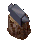
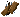
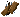
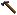
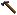
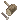

作成の基本
１．作成に必要なアイテム、施設
生産スキルを使い様々なアイテムを作成することができますが、必要な道具・施設・材料はスキルによって異なっています。
以下、生産スキル毎に使用する道具および基本的な素材を示します。
（１）鍛冶
- 作成道具 ：
 tong [やっとこ] ／smith's hammer [鍛冶ハンマー]
／
tong [やっとこ] ／smith's hammer [鍛冶ハンマー]
／ sledge hammer [スレッジハンマー]
sledge hammer [スレッジハンマー]
- 材料 ：
 ingot [インゴット] ／
ingot [インゴット] ／ scale（鱗鎧作成用） ／
scale（鱗鎧作成用） ／ cloth（tessen作成用）
cloth（tessen作成用）
- 鉄床（固定施設） ： anvil [金床] ／
 stone anvil [石の金床]
stone anvil [石の金床]
- 炉（固定施設） ：
 small forge [小型炉] ／
small forge [小型炉] ／ large forge [大型炉] ／elven forge [エルフの炉]
large forge [大型炉] ／elven forge [エルフの炉]
（２）裁縫
- 作成道具 ：
 sewing kit [裁縫道具]
sewing kit [裁縫道具]
- 材料 ：
 leather [切った皮] ／cloth [布] ／
leather [切った皮] ／cloth [布] ／ bone（骨鎧作成用）
bone（骨鎧作成用）
（３）大工
- 作成道具 ：
 jointing plane [際かんな] ／moulding planes [丸かんな] ／
jointing plane [際かんな] ／moulding planes [丸かんな] ／ smoothing plane [仕上げかんな]
smoothing plane [仕上げかんな]
- 作成道具 ：
 scorp [彫刻刀] ／
scorp [彫刻刀] ／ draw knife [ドローナイフ] ／saw [ノコギリ]
draw knife [ドローナイフ] ／saw [ノコギリ]
- 作成道具 ： dovetail saw [ほぞ挽き鋸] ／
 froe [木工なた] ／hammer [ハンマー]
froe [木工なた] ／hammer [ハンマー]
- 作成道具 ： inshave [U字かんな] ／
 nails [くぎ]（NPC販売）
nails [くぎ]（NPC販売）
- 作成道具 ： mallet and chisel [石工道具]
- 材料 ：
 log または board [丸太または木の板] ／cloth [布] ／ingot
／
log または board [丸太または木の板] ／cloth [布] ／ingot
／ granite [花崗岩]
granite [花崗岩]
（４）細工
- 作成道具 ：
 tinker's tool [細工道具] ／
tinker's tool [細工道具] ／ tinker's tool [細工道具]（NPC販売）
tinker's tool [細工道具]（NPC販売）
- 材料 ： ingot ／log または board [丸太または木の板] ／宝石類（アクセサリ作成用）
（５）書写
- 作成道具 ：
 scribe's pen [書写ペン]
scribe's pen [書写ペン]
- 材料 ：
 blank scroll [白紙のスクロール] ／
blank scroll [白紙のスクロール] ／ 秘薬類
秘薬類
（６）錬金
- 作成道具 ：
 mortar and pestle [乳鉢] ／
mortar and pestle [乳鉢] ／ blow pipe（硝工用）
blow pipe（硝工用）
- 材料 ：
 empty bottle [空きビン] ／秘薬類 ／
empty bottle [空きビン] ／秘薬類 ／ sand [砂]（硝工用）
sand [砂]（硝工用）
（７）弓工
- 作成道具 ：
 fletcher's tool [弓矢作成ツール]
fletcher's tool [弓矢作成ツール]
- 材料 ： log または board [丸太または木の板]
（８）料理
- 作成道具 ：
 skillet [フライパン] ／
skillet [フライパン] ／ flour sifter [粉ふるい] ／
flour sifter [粉ふるい] ／ rolling pin [めん棒]
rolling pin [めん棒]
- 材料 ：
 flour [小麦粉] ／
flour [小麦粉] ／ 水 ／蜂蜜 ／ 他、果物・生肉など
水 ／蜂蜜 ／ 他、果物・生肉など
（９）測量
- 作成道具 ：
 mapmaker's pen [地図作成ペン]
mapmaker's pen [地図作成ペン]
- 材料 ： blank scroll [白紙のスクロール] ／
 blank map [地図]
blank map [地図]
（10）練成
- 作成道具 ： なし
- 材料 ： 魔法素材 ／宝石類 ／
 希少材料
希少材料
- 炉（固定施設） ：
 soul forge [ソウルフォージ]
soul forge [ソウルフォージ]
２．作成メニュー
作成メニューは、「１．作成に必要なアイテム、施設」で示した作成道具をダブルクリックすると表示されます。
作成メニュー（その１）
作成メニュー（その２）
④をクリックしたときの画面
- 1 作成履歴 ： 選択項目に最近作成した10アイテムを表示します。
- 2 カテゴリ選択 ： 選択したカテゴリに対応するアイテムが右に表示されます。
- 3 作成アイテム選択 ： 右に表示されたアイテムを作成します。
- 4 アイテム情報 ： 左に表示されたアイテムに関する情報を表示します。
- 5 次ページ ： 同一カテゴリの次のページに移動します。
- 6 素材選択 ： 作成時に使用する素材を選択します。
- 7 作成数指定、最大数作成 ： 同じアイテムの作成数量を指定（1〜100）または作成道具が壊れるまで作成を繰り返します。
その他
- アイテムを溶かす ： 鍛冶スキルで作成したアイテムをインゴットに戻すことができます。
- 修理 ： 耐久値の下がった装備品を修理することができます。
- 銘 ： スキルが100以上のキャラクターが高品質（exceptional）なアイテムを作成したときの設定です。
- 入れる ： 高品質品を作成したとき、自動的に銘が入ります。
- 毎回確認 ： 高品質品を作成したとき、銘を入れるかどうか毎回確認します。この設定で複数作成したとき、確認ウィンドウが大量に表示されます。
- 入れない ： 高品質品を作成しても、銘は入りません。
- 強化 ： 普通の素材から作られた装備品に特殊素材の効果を付与させることができます。
- 変成 ： 既存の装備品をガーゴイル専用の装備にすることができます。スキルが100以上必要でソウルフォージを使用します。
- クエスト用にする／しない ： アイテムを作成したとき、それがクエストに必要なアイテムなら、作成と同時にクエストアイテムとして登録できます。
- 再作成 ： 前回作成したアイテムを作成します。ただし、このボタンでは1回の作成しか行われません。
スキル毎の生産メニューの内容
| |
素材選択 |
溶かす |
修理 |
強化 |
変成 |
| blacksmith[鍛冶] |
|
○ |
○ |
○ |
○ |
| tailoring[裁縫] |
|
− |
○ |
○ |
○ |
| carpentry[大工] |
|
− |
○ |
○ |
○ |
| masonry[石工] |
|
− |
○ |
○ |
− |
| tinkering[細工] |
|
− |
○ |
○ |
○ |
| fletching[弓工] |
|
− |
○ |
○ |
− |
| glassblowing[硝工] |
なし |
− |
○ |
− |
− |
| alchemy[錬金] |
なし |
− |
− |
− |
− |
| cooking[料理] |
なし |
− |
− |
− |
− |
| inscription[書写] |
なし |
− |
− |
− |
− |
| cartography[測量] |
なし |
− |
− |
− |
− |
３．アイテムの作成
アイテムは、下に示す方法で作成します。
- 1. 作成メニューを開きます（道具をダブルクリック）
- 2. 作成するアイテムに対応するカテゴリを選択します（作成メニュー画像の2番）
- 3-1. 作成するアイテムの左にある矢印ボタンを押します（作成メニュー画像の3番）。
- 3-2. 作成するアイテムの右にある情報ボタンを押し（作成メニュー画像の4番）、作成数指定または最大数作成ボタンを押します（作成メニュー画像の7番）。
- 4. アイテム作成に成功した場合、バックパック内にアイテムが入ります。失敗した場合、作成しようとしたアイテムに応じて材料が失われます。